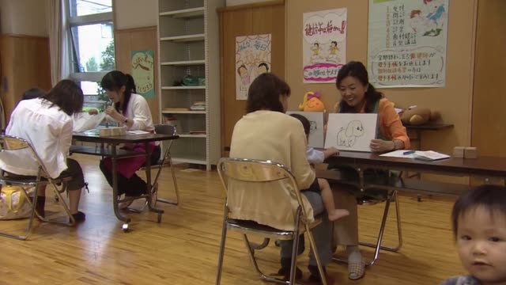
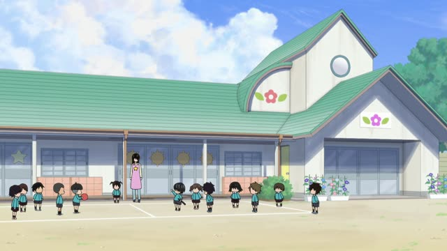

どちら・どっち
| Polite | どちら |
|---|---|
| Casual | どっち |
Same meaning: "which one (of two)". Only the politeness changes.
Brush Up Life · Episode 10
どちらが宇野さんですか？
"Which one of you is Uno-san?"
どちら means "which one", picking between two (or a few). On this card, two people are standing there and she asks which of them is Uno.
どちら is the polite version, どっち the casual one: どっちが宇野さん？
どちら is also the polite way to ask "where" or "which way": 駅はどちらですか？

Weakest Beast · Episode 5
どっちがいい？
"Which one do you want?"
どっち is the casual どちら: "which one" when there are two choices. On this card, どっち + がいい asks which of the two the other person wants.
Quick Examples
Holding up two shirts for a friend.
どっちがいい？
"Which one is better?"
CasualA waiter at a café.
コーヒーと紅茶、どちらがいいですか？
"Coffee or tea, which would you like?"
PoliteLost, asking a stranger.
駅はどちらですか？
"Which way is the station?"
A politer どこ.
PoliteSmall talk with a friend.
犬と猫、どっちが好き？
"Dogs or cats, which do you like?"
CasualWith and without
どれがいい？
"Which one do you want?" From a whole row of things.
赤と青、どっちがいい？
"Red or blue, which do you want?" Only two to choose from.
Examples from Media

Shirokuma Cafe · Episode 9
で お届けはどちらまで
"And where shall we deliver it to?"
どちら as a polite どこ, the way shop staff talk. まで = "to, as far as".
Kekkon Dekinai Otoko · Episode 4
ご主人 どちらから？
"Where is your husband from?"
どちら as a polite "where".
Good Morning Call · Episode 13
これから どちらへ。
"Where are you off to now?"
どちらへ: a polite "where to?"

1 Litre of Tears · Episode 1
ワンちゃんはどっちですか？
"Which one is the doggie?"
Casual どっち, polite です: people mix them.

Death Note · Episode 10
ではどちらにするか決めてください。
"Then please decide which it will be."
どちら + に + する ("decide on") = "decide which one". か makes it "whether this or that".

Kotaro Lives Alone · Episode 4
コタローはどっちの味方だ？
"Kotaro, whose side are you on?"
どっちの + noun: "which one's".

Shirokuma Cafe · Episode 27
マサキはどっちが好き
"Masaki, which one do you like?"
Two coffees to compare, so どっち. A question without か: the rising voice does the job.
Midnight Diner: Tokyo Stories · Season 2, Episode 10
どちらもいらない。
"I don't need either."
どちらも + negative: neither of the two.
Further Reading
A Dictionary of Basic Japanese Grammar
Appendix 5, Ko-so-a-do · p. 601